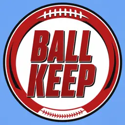

BALL KEEP
Superflex · PPR · Sleeper
2026 Week 7 · Official slate
Published Week 7 kicker boards are not on this rebuild. Season-long K lives on Top Kickers. The finished Week 6 stream sits on Week 6 Kickers.
FAQ
Published Week 7 kicker boards are not on this rebuild. Season-long K lives on Top Kickers. The finished Week 6 stream sits next door.